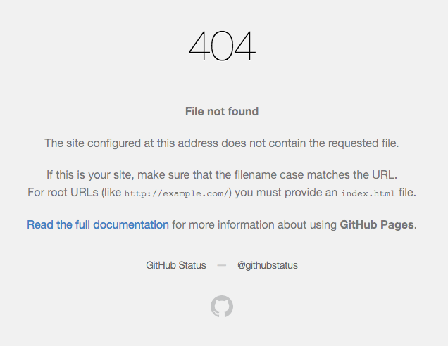

[hexo]如何创建404页面
根据前面的攻略，我们目前已经有自己的博客了——可以更换主题、删除文章、写一篇文章，或者创建自己的页面了。但是有时候当我们打开自己博客，不小心在url中输入了错误的路径或者地址时，尽管子域名是正确的，但是却显示一个github默认的404页面，如下图：

错误的路径就是，假如你的博客下有about路径，下面有一个index.html页面，那么你的url输入 http://username.github.io/about 是可以看到这个路径下的index.html，但是如果你在地址栏输入 http://username.github.io/about2,那么你就会看到这个github404页面。
那么如何才能让这个404页面变成自己个性化的404页面呢？其实非常简单，就是直接直接在source文件夹下创建一个404.html页面，然后通过hexo g -d直接生成自己的404页面。
这里需要注意的是，404页面的名字必须叫404.html，而不能是别的名字。其次，在本地打开4000端口是无法查看404页面效果的，也就是说你通过hexo g命令在public文件夹中生成404.html之后，再执行hexo s想在本地预览这个404页面的时候，其实是无法查看的。必须部署到github之后才可以查看404页面的效果。
这个404页面的效果可以完全由你来决定，因此你可以设置自己的个性404页面。网上有很多有趣的404页面，知乎也有一个问题是好玩的404页面，比如下面两个
- http://southpark.cc.com/guide/eisodes
- http://www.battlenet.com.cn/wow/zh/character/%E5%A5%88%E6%B3%95%E5%88%A9%E5%AE%89/%E7%BA%B3%E5%B0%BC
最后，网上绝大多数多数的文章都推荐采用腾讯公益404页面，我的博客目前也是采用的腾讯公益404。想要查看效果，在我的博客地址栏的路径下输入一些乱码就可以查看了。
想要设置腾讯公益404非常简单，只要在你的404.html文件中输入下面的代码就可以了。
1 | <html> |
最后，希望所有的父母都能早日找回自己失散的孩子们。